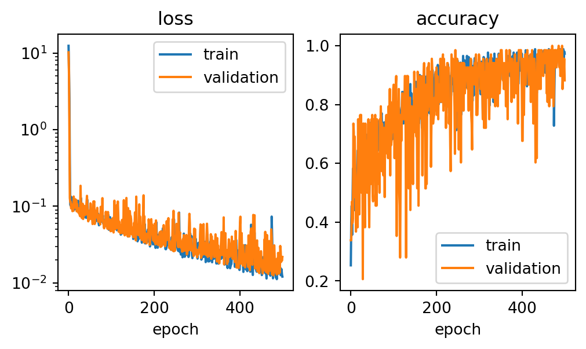

flowchart LR
subgraph input
direction TB
x_1
x_2
end
subgraph feature_map[features]
f_1
f_2
end
subgraph raw predictions[raw predictions/logits]
y_hat_1
y_hat_2
y_hat_3
end
subgraph label_preds[label probabilities]
p_1
p_2
p_3
end
x_1 & x_2 --> x
x --phi--> f_1 & f_2
f_1 --w_1--> y_hat_1
f_2 --w_1--> y_hat_1
f_1 --w_2--> y_hat_2
f_2 --w_2--> y_hat_2
f_1 --w_3--> y_hat_3
f_2 --w_3--> y_hat_3
y_hat_1 & y_hat_2 & y_hat_3 --> softmax
softmax --> p_1 & p_2 & p_3
Introduction to Deep Learning
$$
$$
The Problem of Features
Let’s begin by recalling and slightly expanding the empirical risk minimization framework that we’ve developed throughout this course. In the simplest approach to empirical risk minimization, we began with a matrix of features \(\mathbf{X}\in \mathbb{R}^{n\times p}\) and a vector of targets \(\mathbf{y}\in \mathbb{R}^n\). We defined a linear predictor function \(\hat{y} = f(\mathbf{x}) = \langle \mathbf{w}, \mathbf{x} \rangle\) which we interpreted as producing predictions of the value of \(y\). We then defined a loss function \(\ell: \mathbb{R}\times \mathbb{R}\rightarrow \mathbb{R}\) that told us the quality of the prediction \(\hat{y}\) by comparing it to a true target \(y\). Our learning problem was to find \(\mathbf{w}\) by minimizing the empirical risk: the mean (or sum) of the risk across all data points:
\[ \hat{\mathbf{w}} = \mathop{\mathrm{arg\,min}}_{\mathbf{w}\in \mathbb{R}^p} \sum_{i = 1}^n \ell(\langle \mathbf{w}, \mathbf{x}_i \rangle, y_i)\;. \]
We solved this problem using gradient descent.
When we extended to the setting of multiple label classification (e.g. three penguin species), we modified this setup slightly. We let \(\mathbf{Y}\in \mathbb{R}^{n\times \ell}\) be a matrix of targets, where each of the \(\ell\) columns represents a possible category, \(y_{i\ell} = 1\) means that observation \(i\) has label \(\ell\). We then needed to replace the prediction rule \(f(\mathbf{x}) = \langle \mathbf{w}, \mathbf{x} \rangle\) with a matrix-vector multiplication \(f(\mathbf{x}) = \mathbf{x}_i\mathbf{W}\), where \(\mathbf{W}\in \mathbb{R}^{p \times \ell}\). This produced a vector \(\hat{\mathbf{y}}\) which we could compare to \(\mathbf{y}\) using an appropriately modified loss function.
\[ \hat{\mathbf{W}} = \mathop{\mathrm{arg\,min}}_{\mathbf{W}\in \mathbb{R}^{p \times \ell}} \sum_{i = 1}^n \ell(\mathbf{x}_i\mathbf{W}, \mathbf{y}_i)\;. \]
However, we soon discovered a limitation: this method can only discover linear patterns in data, e.g. linear decision boundaries for classification or linear trends for regression. But most interesting patterns in data are nonlinear. We addressed this limitation using feature engineering: define a feature map \(\phi: \mathbb{R}^p \rightarrow \mathbb{R}^{q}\) and then solve the modified problem
\[ \hat{\mathbf{W}} = \mathop{\mathrm{arg\,min}}_{\mathbf{W}\in \mathbb{R}^{q\times \ell}} \sum_{i = 1}^n \ell(\phi(\mathbf{x}_i)\mathbf{W}, \mathbf{y}_i)\;. \]
The Network View
We can express the process of obtaining a prediction from logistic regression using a computational graph. Here’s an example of a computational graph for logistic regression in which we have two input features and wish to perform 3-way classification by outputing for each input \(\mathbf{x}\) a vector \(\mathbf{p}\) of probabilities for each label:
Back to Recap
We have a problem that we never addressed in a fully satisfactory way. On the one hand, in order to describe complex, nonlinear patterns in our data, we want a lot of features. However, the more features we engineer, the more likely we are to encounter overfitting.
Kernel methods like kernel logistic regression or support vector machine can actually use infinitely many features!
One of the most common approaches to this problem around 15 years ago was to engineer many features but regularize, which forced entries of \(\mathbf{w}\) to remain small. This is a useful approach that is still used today, especially in statistics and econometrics. However, when our data points are very complex (audio files, images, text), it might still be very difficult for us to manually engineer the right sets of features to use even in this approach.
The fundamental idea of deep learning is to take a different tack: instead of only learning \(\mathbf{w}\) in the empirical risk minimization problem, we are also going to learn the feature map \(\phi\). That is, we want to find
\[ \hat{\mathbf{W}}, \hat{\phi} = \mathop{\mathrm{arg\,min}}_{\mathbf{W}, \phi} \; \mathcal{L}(\phi(\mathbf{X})\mathbf{W}, \mathbf{Y})\;, \]
and our learned predictor is \(f(\mathbf{X}) = \hat{\phi}(\mathbf{X})\hat{\mathbf{W}}\).
The need to learn the feature map \(\phi\) as well as weights \(\mathbf{w}\) makes this problem much harder, both mathematically and computationally. A major enabler of the deep learning revolution has been the development of hardware that is up to the task (especially GPUs), as well as algorithms that make good use of this hardware.
Deep Penguin Classification
Let’s use our friends the penguins as a running example. When working with deep models we often need to construct more complex data structures in order to feed our models to the data. I’m hiding this complexity for today; we’ll discuss it in some more detail in a coming lecture.
Code
import torch
import pandas as pd
from torch.utils.data import Dataset
from torch.utils.data import DataLoader
target_ix_dict = {
"Adelie Penguin (Pygoscelis adeliae)" : 0,
"Chinstrap penguin (Pygoscelis antarctica)" : 1,
"Gentoo penguin (Pygoscelis papua)" : 2
}
class PenguinsDataset(Dataset):
def __init__(self, train = True):
if train:
url = "https://raw.githubusercontent.com/middlebury-csci-0451/CSCI-0451/main/data/palmer-penguins/train.csv"
else:
url = "https://raw.githubusercontent.com/middlebury-csci-0451/CSCI-0451/main/data/palmer-penguins/test.csv"
df = pd.read_csv(url)
df = df.drop(["studyName", "Sample Number", "Individual ID", "Date Egg", "Comments", "Region"], axis = 1)
df = df[df["Sex"] != "."]
df = pd.get_dummies(df, columns = [
"Island", "Stage", "Clutch Completion", "Sex"
])
df = df.dropna()
self.df = df
self.transform = lambda x: torch.tensor(x, dtype = torch.float32)
self.target_ix = lambda x: target_ix_dict[x]
self.target_transform = lambda x: torch.zeros(
3, dtype=torch.float).scatter_(dim=0, index=torch.tensor(x), value=1)
def __len__(self):
return self.df.shape[0]
def __getitem__(self, idx):
features = self.df.drop(["Species"], axis = 1).iloc[idx,:]
label = self.df.iloc[idx,:]["Species"]
features = self.transform(features)
label = self.target_ix(label)
label = self.target_transform(label)
features = features.to(device)
label = label.to(device)
return features, labelCode
if torch.backends.mps.is_available():
device = "cpu"
elif torch.cuda.is_available():
device = "cuda"
else:
device = "cpu"Here are our data sets. PenguinsDataset is a custom class that I implemented above, while DataLoader is a utility from torch that automatically handles things like batching and randomization for gradient descent.
train = PenguinsDataset()
train_dataloader = DataLoader(train, batch_size=10, shuffle=True)
val = PenguinsDataset(False)
val_dataloader = DataLoader(val, batch_size=10, shuffle=True)Now we’re ready to define our model. To see how we do things in torch, let’s start by implementing logistic regression. To start, we need to create a predictor model that does the prediction step of logistic regression. If you’ll recall, this is nothing more than matrix multiplication. The nn.Linear “layer” supplied by torch implements this:
from torch import nn
class penguinLogistic(nn.Module):
def __init__(self):
super().__init__()
self.linear = nn.Sequential(
nn.Linear(14, 3) # (number of features, number of class labels)
)
def forward(self, x):
return self.linear(x)We can optimize this model using the cross-entropy loss and the Adam optimizer. As you’ll recall, logistic regression is nothing more than matrix multiplication plus the cross-entropy loss, so this is a logistic regression model!
model = penguinLogistic()
loss_fn = nn.CrossEntropyLoss()
learning_rate = 1e-4
optimizer = torch.optim.Adam(model.parameters(), lr=learning_rate)Now we need to actually perform the optimization. The torch package gives us a lot of control over exactly how this happens, and we’ll go over the details in a future lecture.
Code
def training_loop(model, train_dataloader, val_dataloader, learning_rate, epochs):
train_size = len(train_dataloader.dataset)
val_size = len(val_dataloader.dataset)
train_loss_history = []
train_acc_history = []
val_loss_history = []
val_acc_history = []
for t in range(epochs):
train_loss = 0.0
train_acc = 0.0
val_loss = 0.0
val_acc = 0.0
for batch, (X, y) in enumerate(train_dataloader):
optimizer.zero_grad()
pred = model(X)
fit = loss_fn(pred, y)
train_loss += fit.item() / train_size
train_acc += (pred.argmax(dim = 1) == y.argmax(dim = 1)).sum() / train_size
# Backpropagation
fit.backward()
optimizer.step()
train_loss_history += [train_loss]
train_acc_history += [train_acc]
for batch, (X, y) in enumerate(val_dataloader):
with torch.no_grad():
pred = model(X)
fit = loss_fn(pred, y)
val_loss += fit.item() / val_size
val_acc += (pred.argmax(dim = 1) == y.argmax(dim = 1)).sum() / val_size
val_loss_history += [val_loss]
val_acc_history += [val_acc]
if t % 50 == 0:
print(f"epoch {t}: val_loss = {val_loss}, val_accuracy = {val_acc}")
return train_loss_history, train_acc_history, val_loss_history, val_acc_history
from matplotlib import pyplot as plt
def plot_histories(tlh, tah, vlh, vah):
fig, axarr = plt.subplots(1, 2, figsize = (6, 3))
axarr[0].plot(tlh, label = "train")
axarr[0].plot(vlh, label = "validation")
axarr[0].legend()
axarr[0].set(xlabel = "epoch", title = "loss")
axarr[0].semilogy()
axarr[1].plot(tah, label = "train")
axarr[1].plot(vah, label = "validation")
axarr[1].legend()
axarr[1].set(xlabel = "epoch", title = "accuracy")Let’s go ahead and train!
tlh, tah, vlh, vah = training_loop(model, train_dataloader, val_dataloader, 1e-4, 500)
plot_histories(tlh, tah, vlh, vah)epoch 0: val_loss = 45.5021510404699, val_accuracy = 0.4852941632270813
epoch 50: val_loss = 0.609782618634841, val_accuracy = 0.07352941483259201
epoch 100: val_loss = 0.3989190424189848, val_accuracy = 0.1764705926179886
epoch 150: val_loss = 0.19054848131011515, val_accuracy = 0.44117650389671326
epoch 200: val_loss = 0.06688327999675975, val_accuracy = 0.7352941036224365
epoch 250: val_loss = 0.03516546855954562, val_accuracy = 0.9264706373214722
epoch 300: val_loss = 0.026237546082805183, val_accuracy = 0.9705882668495178
epoch 350: val_loss = 0.02203846328398761, val_accuracy = 0.9852941632270813
epoch 400: val_loss = 0.01984664469080813, val_accuracy = 1.0000001192092896
epoch 450: val_loss = 0.015965097419479313, val_accuracy = 0.9852941632270813
We can see that our model is doing much better than we would expect from random guessing on this problem, although it may not be competitive with many of the models that you implemented in your analysis of the penguins data set. Further training or tweaks to parameters like batch sizes and learning rates could potentially help improve performance here.
Let’s try adding a hidden layer, as in Equation 1. To do this, we need to add a nonlinearity \(\alpha\) and more Linear layers. The important points are:
- The first dimension of the first linear layer needs to match the number of features of the input.
- The final dimension of the last linear layer needs to match the number of possible labels.
- The final dimension of each linear layer needs to match the first dimension of the next layer.
These rules follow directly from the need to make all the matrix multiplications turn out right.
So, let’s try a model with a single layer of 100 hidden units:
from torch import nn
class penguinNN(nn.Module):
def __init__(self):
super().__init__()
self.linear_relu_stack = nn.Sequential(
nn.Linear(14, 100), # U_1
nn.ReLU(), # common choice of alpha these days
nn.Linear(100, 3) # W
)
def forward(self, x):
return self.linear_relu_stack(x)
model = penguinNN().to(device)We can optimize it using the same approach as before:
optimizer = torch.optim.Adam(model.parameters(), lr=learning_rate)
tlh, tah, vlh, vah = training_loop(model, train_dataloader, val_dataloader, 1e-4, 500)
plot_histories(tlh, tah, vlh, vah)epoch 0: val_loss = 10.191597097060258, val_accuracy = 0.3382353186607361
epoch 50: val_loss = 0.06825322088073282, val_accuracy = 0.7647059559822083
epoch 100: val_loss = 0.047590394668719345, val_accuracy = 0.867647111415863
epoch 150: val_loss = 0.053128435331232404, val_accuracy = 0.7058823704719543
epoch 200: val_loss = 0.03455903118147569, val_accuracy = 0.9264706373214722
epoch 250: val_loss = 0.0409484260222491, val_accuracy = 0.779411792755127
epoch 300: val_loss = 0.02161241366582758, val_accuracy = 0.9558823704719543
epoch 350: val_loss = 0.019268721122952068, val_accuracy = 0.9852941632270813
epoch 400: val_loss = 0.057865854571847355, val_accuracy = 0.6764705777168274
epoch 450: val_loss = 0.020513927235322842, val_accuracy = 0.9558823704719543
This model has also done well on this task, although still not closer to perfect accuracy. It’s also interesting to note that the model’s loss and accuracy both vary quite wildly during the training process. This is not uncommon, but may also point to a possible benefit of using a smaller step-size.
It might appear that we haven’t really gained much from the massive costs of mathematical structure and computational architecture – we could have done better with just tools from sklearn, or even our own hand-built implementations! We’ll soon see the infrastructure working to our advantage when we get to problems involving large data sets with complex structure, like text and images.
© Phil Chodrow, 2023